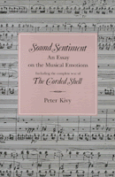

<body bgcolor="#FFFFFF" text="#000000" link="#0000FF" vlink="#CC0000" alink="#CC0000"><center><hr width="350" size="1" align="center" noshade>Kivy continues his discussion from <I>The Corded Shell</I> of how music possesses expressive properties<hr width="350" size="1" align="center" noshade><p><a href="https://cdcshoppingcart.uchicago.edu/Cart/ChicagoBook.aspx?ISBN=9780877226413&&PRESS=temple" target="_top">Buy this book!</a> | <a href="https://cdcshoppingcart.uchicago.edu/Cart/Cart.aspx?PRESS=temple" target="_top">View Cart</a> | <a href="https://cdcshoppingcart.uchicago.edu/Cart/Cart.aspx?PRESS=temple" target="_top">Check Out</a></p><p></p></center><!--none//--><h1>Sound Sentiment</h1>
<H2>An Essay on the Musical Emotions</H2>
<H2>Including the complete text of "The Corded Shell"</H2>
<h3>Peter Kivy, foreword by Joseph Margolis</h3>
<P>cloth 0-87722-641-5 $39.95, Oct 89, <FONT COLOR=#990033>Out of Print</FONT>
<br>paper 0-87722-677-6 $35.95, Oct 89, <FONT COLOR=#990033>Available</FONT>
<BR> 304 pp
</P><p><I>The Corded Shell: Reflections on Musical Expression</I>, published in 1980 and now out of print, was concerned with the question of how music comes to have the emotional properties that have been perceived in it and ascribed to it since antiquity. In that book, Peter Kivy argued that music possesses expressive properties, not as powers to arouse emotions in us but, rather, as perceived qualities of the music itself. <I>In Sound Sentiment</I>, he augments his previous work with four entirely new chapters. Incorporating the complete, corrected text of <I>The Corded Shell</I>, Kivy brings his earlier arguments up to date in light of recent work in the field, and discusses and answers various criticisms.
<BR>&nbsp;<h2>Reviews</h2>
<p>From reviews of <I>The Corded Shell</I>:
<p><I>"Kivy�s is a lucid and eminently readable account, interesting both historically and conceptually, of musical expressiveness&#151flexible in that it gives scope to both the contour and the convention models, the account becoming more convincing as one reads, as the theory is applied to more and more specific passages of music, and as one after another bit of irrelevancy or pseudo-mysticism is progressively shucked off."</I>
<br>&#151<b>John Hospers</b>, <I>Journal of Aesthetic Education</I>
<p><I>"</I>The Corded Shell<I>, in its clarity, judiciousness, and breadth, will clearly take its place as a major work on musical expression. Those who seek to chart the murky waters of musical aesthetics are permanently in Kivy�s debt."</I>
<br>&#151<b>Jerrold Levinson</b>, <I>Canadian Philosophical Review</I>
<p><I>"Informed, lucid, and witty, Professor Kivy�s argument brings enlightened solace to the musical amateur and tempers the harsh stance of the musical purist. A splendid contribution to the aesthetics of music."</I>
<br>&#151<b><I>Virginia Quarterly Review</I></b>
<BR>&nbsp;<H2>About the Author(s)</H2>
<P><b>Peter Kivy</b> is Professor of Philosophy at Rutgers University and Associate Editor of the <I>Journal of Aesthetics and Art Criticism</I>. He received the Deems Taylor Award of ASCAP for <I>The Corded Shell</I>.</P>
<BR><H2>Subject Categories</H2>
<p><A HREF="/tempress/philosophy.html" TARGET="_top">Philosophy and Ethics</a>
<BR><A HREF="/tempress/music.html" TARGET="_top">Music and Dance</a>
</p>
<BR><h2 class="inpageheading">In the series</H2>
<P><I><a href="http://www.temple.edu/tempress/arts_philo.html" onMouseOver="window.status='Click for other books in this series!'; return true;" onMouseOut="window.status=''; return true;" target="_top">The Arts and Their Philosophies</a></i>, edited by Joseph Margolis.
</p><p>The volumes in <i>The Arts and Their Philosophies</i>, edited by Joseph Margolis, include: overviews of such well-defined sub-disciplines as the philosophy of music, film, and literature; studies of important figures, schools, and movements; monographs on such topics as postmodernism, texts and interpretation, reference in fiction, and the methodology of art history; explorations of the intersection of the arts and other disciplines, such as feminism and interpretation, art and politics; and translations of major works.</p>
<p align="center"><a href="https://cdcshoppingcart.uchicago.edu/Cart/ChicagoBook.aspx?ISBN=9780877226413&&PRESS=temple" target="_top">Buy this book!</a> | <a href="https://cdcshoppingcart.uchicago.edu/Cart/Cart.aspx?PRESS=temple" target="_top">View Cart</a> | <a href="https://cdcshoppingcart.uchicago.edu/Cart/Cart.aspx?PRESS=temple" target="_top">Check Out</a></p><p><font face="Arial" size="1"><a href="copyright.html" onMouseOver="window.status='Web Copyright Policy';return true;" onMouseOut="window.status=''" title="Web Copyright Policy">&copy;</a> 2015 <a href="http://www.temple.edu" target="new" onMouseOver="window.status='Link to Temple University home page';return true;" onMouseOut="window.status=''" title="Link to Temple University home page">Temple University</a>. All Rights Reserved. http://www.temple.edu/tempress/titles/650_reg.html</font></p>